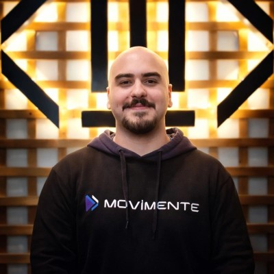

Eu sou Leonardo,
QA Engineer na OrçaFascio
e estudante de
cybersegurança

Sobre
Sou Leonardo, QA Engineer na OrçaFascio e estudante de Ciência da
Computação na UFABC. Comecei como Jovem Aprendiz na AkzoNobel,
passei por suporte de TI e help desk, e hoje escrevo testes automatizados
com Cypress para encontrar falhas antes que elas cheguem ao usuário.
Foi testando software e API's que me interessei por segurança: procurar o que o
sistema não espera é o mesmo raciocínio de um teste de intrusão. É para
essa área que estou levando minha carreira.
Competências
- Cypress
- Jira
- Testes E2E
- Git e GitHub
- Postman
- JMeter
- Burp Suite
Experiência
OrçaFascio
Quality Assurance
Abril 2025 - O momento
Atuo como QA na OrçaFascio, garantindo a qualidade de um software de orçamento de obras usado por construtoras e órgãos públicos. No dia a dia, reviso e valido as entregas do time no Jira, escrevo testes automatizados com Cypress para encontrar falhas antes que cheguem ao usuário e investigo bugs junto com os desenvolvedores até chegar à causa. Como comecei na empresa pelo suporte, conheço de perto como os clientes usam o sistema, e levo isso para os testes, pensando nos fluxos reais e nos casos que ninguém previu.
ABC Sistemas
Suporte de TI
Setembro 2023 - Maio 2024
Responsável por prestar suporte técnico aos usuários do sistema ERP da Moda, auxiliando na resolução de problemas, esclarecimento de dúvidas e otimização do uso das funcionalidades do sistema.
Azko Nobel
Jovem Aprendiz
Junho 2022 - Setembro 2023
Iniciei minha trajetória profissional como jovem aprendiz no setor administrativo da Akzo Nobel, onde auxiliei na gestão de documentações e relatórios na fábrica de tintas de Santo André. Durante esse período, pude receber um reconhecimento ao desenvolver uma planilha para metrificar riscos e possíveis acidentes na fábrica. Essa ferramenta contribuiu diretamente para minimizar os riscos operacionais e prevenir futuros acidentes.
Educação
Universidade Federal do ABC
Bacharelado em Ciência e Tecnologia
Junho 2025 - O Momento
Universidade Federal do ABC
Bacharelado em Ciência da Computação
Junho 2025 - O Momento
 Satya Nadella
CEO, Microsoft
Satya Nadella
CEO, Microsoft
Repellat dignissimos libero. Qui sed at corrupti expedita voluptas odit. Nihil ea quia nesciunt. Ducimus aut sed ipsam. Autem eaque officia cum exercitationem sunt voluptatum accusamus. Quasi voluptas eius distinctio. Voluptatem dignissimos ut.
Entre em contato
Será um prazer contribuir com minha dedicação e conhecimento para o crescimento da sua equipe.